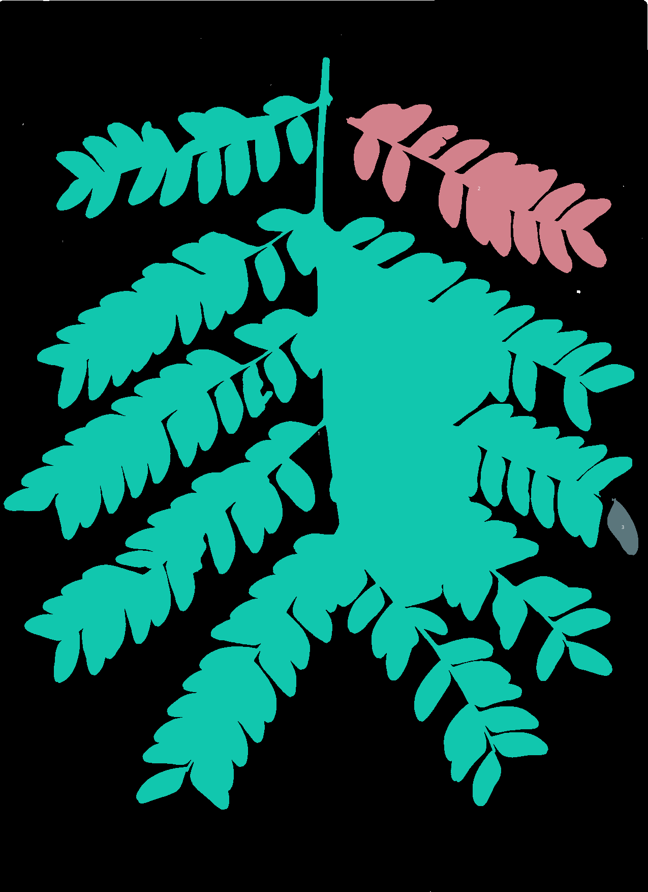
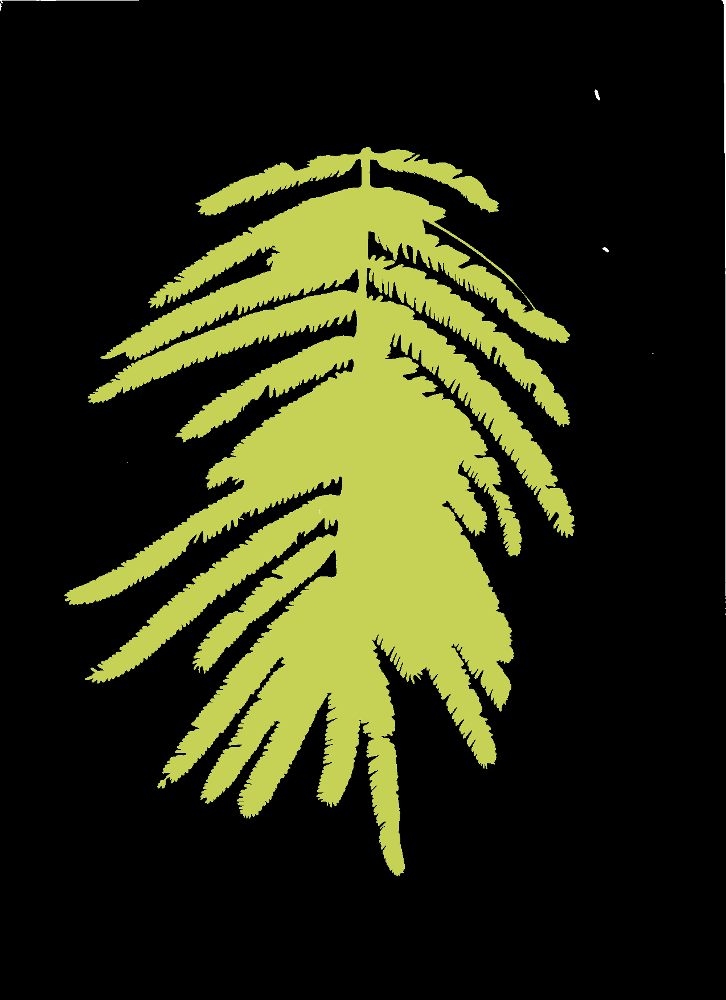
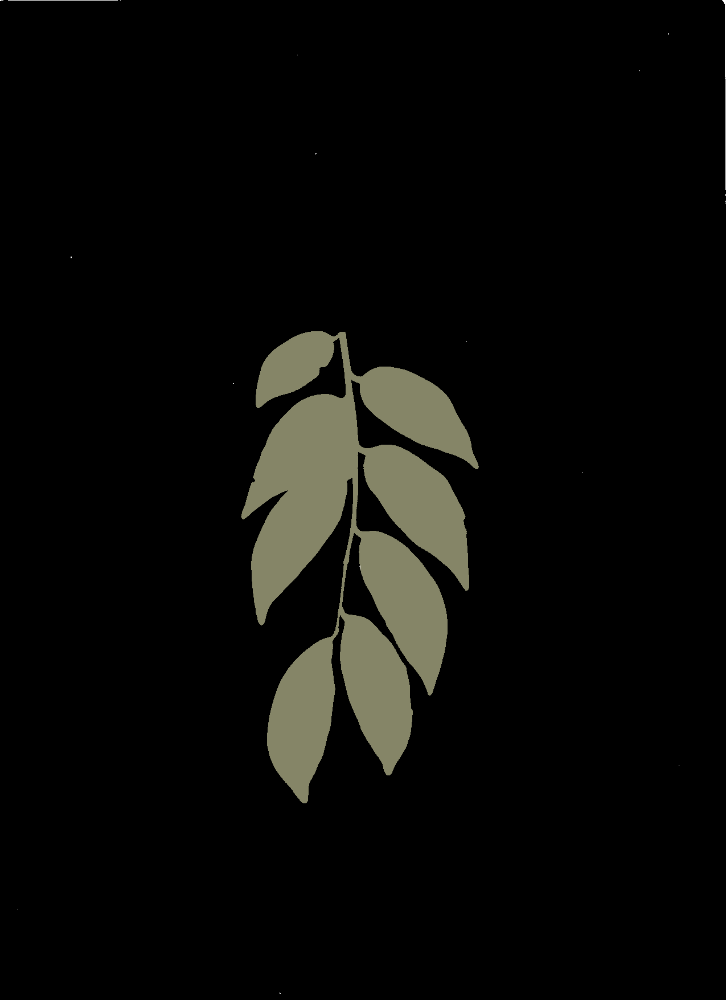

Print enough field sheets for wood core sample collection and leaf sample collection. The template of these files can be found here:
Before starting a lab work day:
Prepare the following files:
Osmometer measurements
TLP_YYYYMMDD.xlsx : an excel file per day to record the osmometer measurements. Make one file per day so it can be saved every evening, with the date format as follow: ex TLP_20270120.xlsx. The template of this file can be found here :
HYD_YYYYMMDD.xls : an excel file per day to record the fresh leaf measurements (thickness, weight and scan done). Make one file per day so it can be saved every evening, with the date format as follow: ex HYD_20270120.xls. The template of this file can be found here :
DRY_YYYYMMDD.xlsx : an excel file per day to record the dry leaf weight. Make one file per day so it can be saved every evening (although the weighting will be done after oven drying), with the date format as follow: ex DRY_10270120_dry.xlsx). The template of this file can be found here :
Record the individuals on which samples have been taken in yearmoday_sample_taken.xlsx before putting them in the oven. The template of this file can be found here (TO DO => see my comment on this issue, with a metadata tab). Make one file per day so it can be saved every evening, with the date format as follow yearmoday_sample_taken.xlsx (ex 20270120_sample_taken.xlsx).
Scan the field sheets
to do decide naming
Save the files on the NAS
Data files, field sheets and scans needs to be stored every evening on the NAS (TO DO: add the link to the NAS), following this file structure:
dry_weight/ the leaf dry weights
hydrated/ the leaf hydrated measurements
field_sheets/ the sampling field sheets in pdf names with the day and the type of
osmo/ the leaf hydrated measurements with osmometer
scans/ the leaf hydrated scans
sample_taken/the list of wood and leaf samples taken
All raw files stored on the NAS need to be lock (so put in read only mode) to avoid deleting or modifying it.
Inspect the scans
If time allow, process the scan (following this procedure to add: template files, and tell where to put it on the NAS) and inspect them manually to detect scan problems. If this is done on the day, a new scan can be redone if relevant. Here is the list of problems that should be looked for, and how to code them (to do, add pictures to illustrate)
missing_part: missing part in the leave due to herbivory or other damage. This can be seen on the mask or the raw scan:
0: no missing part
1: moderate missing part
2: big missing part
anomaly: any anomaly in the generated masks:
ok: no problem
miss_petiolul: for compound leaves, the petiolule is not included, while it should have been according to the protocol
petiol_included: the petiole has been included, while it should have been according to the protocol
one_fol: just one foliole when the species has compound leaves
abn_area: abnormal area, detected because they don’t have the shape of a leaf. Generally, it is because these areas correspond to some spaces between the folioles that are fully surrounded by leaf part, which are interpreted as holes and filled.



touching(to do, add pictures to illustrate):
0 no part touching
1 leaf touching leading to part of the leaf not taken into account,
2 leaf touching leading to all the leaf not taken into account
raw scan (to do, add pictures to illustrate): problem seen on the raw scans
ok: no problem (or very small area concerned)
damaged: part of the leaf or the whole leaf appears black/brown or yellowish on the scan or there are any other damages (except missing part of the leaf) suggesting that the leaf is decaying or is attacked by insects
young: the bright green colour of the leave compared to the other leaves from the individual and/or the species suggest non mature leaves